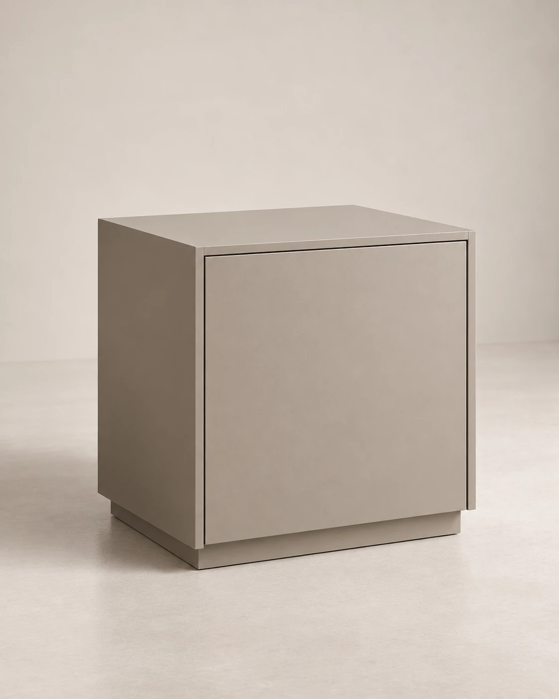
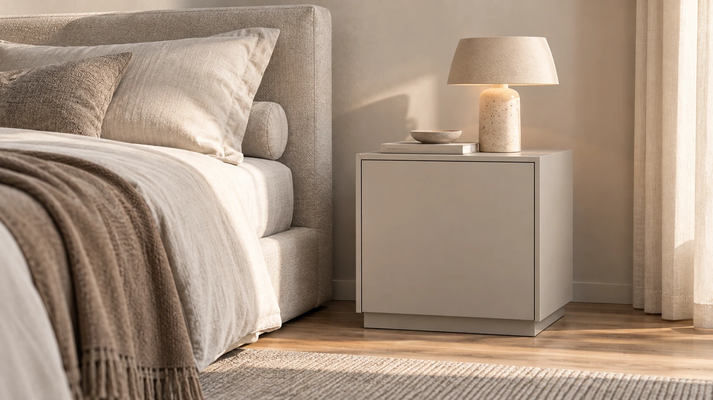
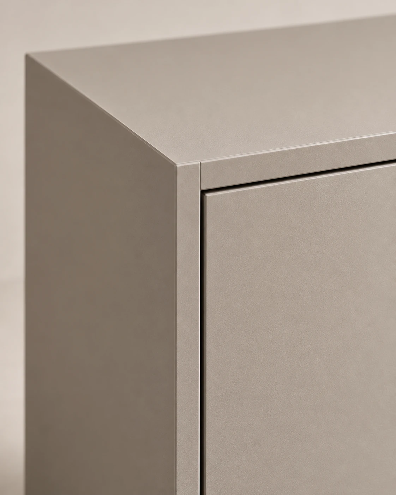
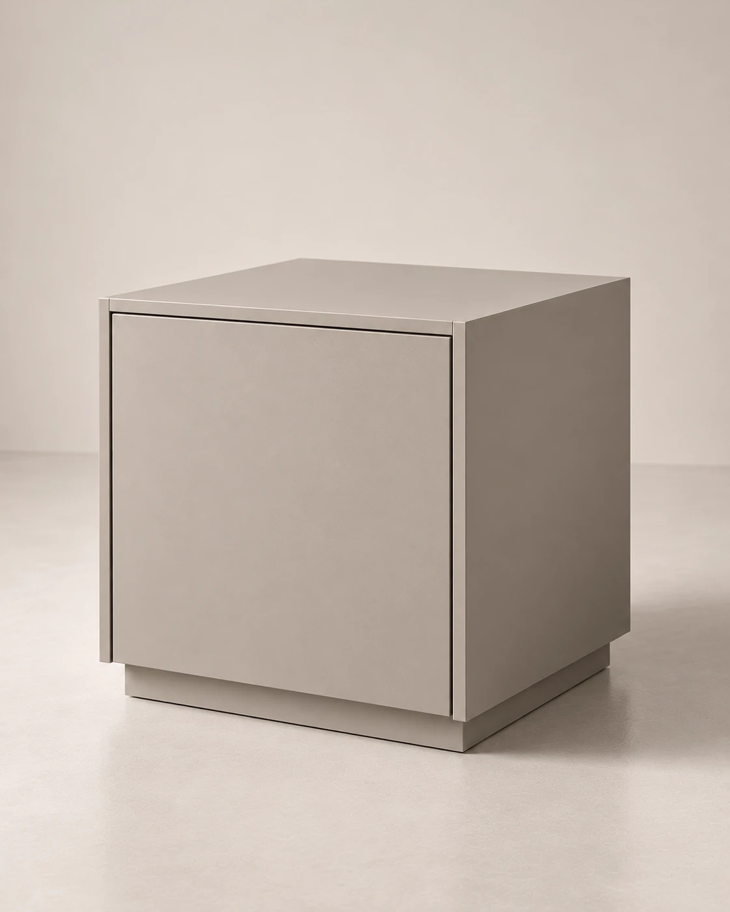

Тумба
NODO 04
Компактная тумба с простой формой для спальни или жилого пространства.
- Размер / Ш × Г × В
- 500 × 420 × 520 мм
- Отделки
- Светлый дуб
Мягкий greige
Глубокий графит
О модели
Компактная форма
для жилого пространства.
NODO 04 — компактный предмет для пространства рядом с кроватью, креслом или диваном. Простая геометрия позволяет тумбе работать в разных интерьерных сценариях.
Небольшой объём не перегружает пространство и сохраняет необходимую поверхность для повседневных предметов.


Характер / детали
Компактная форма
без лишних деталей.
Небольшой масштаб и ясные пропорции позволяют модели естественно встраиваться в жилое пространство.
- 01 / Масштаб
- Компактный интерьерный объём.
- 02 / Форма
- Простая спокойная геометрия.
- 03 / Сценарий
- Рядом с кроватью, креслом или диваном.
NODO 04 / Данные модели
Характеристики
Размеры и отделки относятся к вымышленной демонстрационной модели.
- Тип
- Тумба
- Модель
- NODO 04
- Размер
- 500 × 420 × 520 мм
- Ширина
- 500 мм
- Глубина
- 420 мм
- Высота
- 520 мм
- Отделки
- Светлый дуб / Мягкий greige / Глубокий графит
- Назначение
- Компактное хранение в жилом пространстве
Отделки
Три спокойных
направления.
Мягкий greige
Глубокий графит
Оттенки представлены как визуальные направления демонстрационного проекта.

NODO 04
Подойдёт ли модель
вашему пространству?
Вы можете перейти к демонстрационной форме обращения и указать интересующую модель. Форма показывает пример взаимодействия и не отправляет данные.